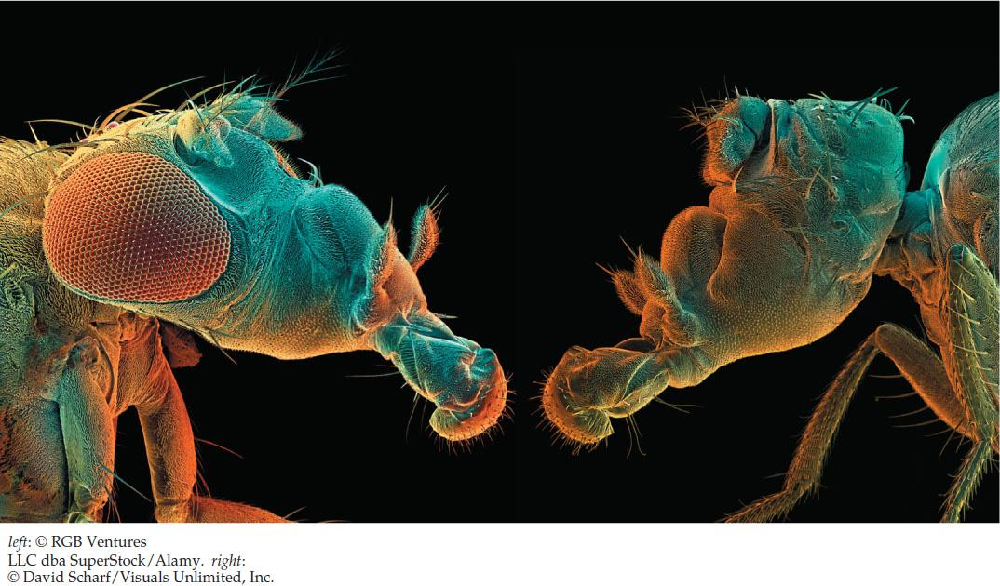

| 14 | Genes, Development, and Evolution |
|
KEY CONCEPTS
14.1 Development Involves Distinct but Overlapping Processes 14.2 Changes in Gene Expression Underlie Cell Fate Determination and Differentiation 14.3 Spatial Differences in Gene Expression Lead to Morphogenesis 14.4 Changes in Gene Expression Pathways Underlie the Evolution of Development 14.5 Developmental Genes Contribute to Species Evolution but Also Pose Constraints |

Scanning electron micrographs of a normal fruit fly (left) and an eyeless mutant fly of the same species (right).
|
Eyes are not essential for survival; many animals and all plants get by just fine without them. However, more than 90 percent of all animals do have eyes or some type of light-sensing organs, and having eyes can confer a selective advantage. About a dozen different kinds of eyes are found among the animals, including the camera-like eyes of humans and the compound eyes of insects, with their hundreds or thousands of individual units. In trying to understand how this variety came about, scientists—starting with Charles Darwin—proposed that eyes evolved independently many times in different animal groups, and that each improvement in the ability of eyes to gather light and form images conferred a selective advantage on their possessor.
Our understanding of the evolution of eyes remained at this level until 1915, when a mutant fruit fly without eyes was found and the gene involved, appropriately called eyeless, was mapped on one of the fly’s chromosomes. This mutant fly remained a laboratory curiosity until the 1990s, when the Swiss developmental biologist Walter Gehring and his colleagues began looking for genes expressed in the fly embryo and found one that mapped to the eyeless locus. By transforming flies with recombinant DNA containing the eyeless gene, they showed that this gene’s product controls the formation of the eye. Expression of the eyeless gene was then manipulated so that it was expressed in different parts of the body. In this way, eye structures were induced on legs, wings, and antennae of different flies. It did not matter where on the body the gene was expressed; if the gene was active, an eye developed there.
An even bigger surprise was in store when database searches revealed that the eyeless gene sequence was similar to that of Pax6, a mouse gene that, when mutated, leads to the development of very small eyes. Could the very different eyes of flies and mice result from simple variations on a common developmental theme? To test for functional similarity between the insect and mammalian genes, Gehring’s team repeated their experiments on flies, but using the mouse Pax6 gene instead of the fly eyeless gene. Once again, eyes developed. A gene whose expression normally leads to the development of a mammalian “camera” eye now led to the development of an insect’s compound eye—a very different eye type. Thus a single gene product appears to function as a molecular switch that turns on eye development in diverse animals. Because of this and other recent findings, it now seems likely that all eye types evolved from a common origin very early in animal evolution.
How do gene products control the development of the eye?